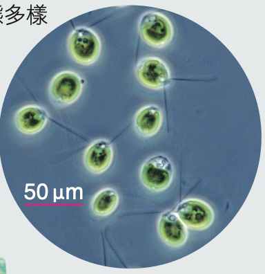
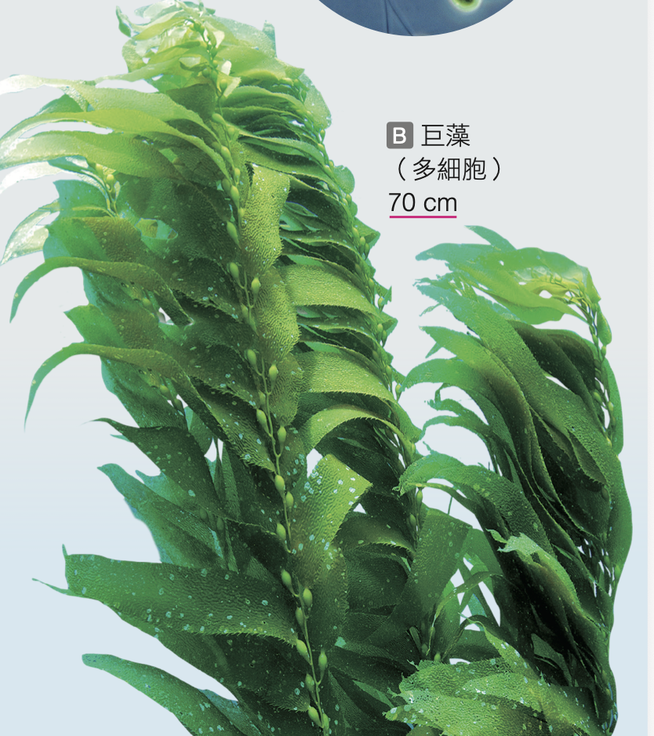

水域中的生產者：藻類
藻類具有細胞壁，也有葉綠體能行光合作用。許多種類也因含有葉綠素以外的其他色素而呈現不同顏色。多數藻類生活於水中，是水域環境中重要的生產者。
藻類形態多樣，有微小的單細胞藻類，例如單胞藻；也有可長達十幾公尺以上的大型多細胞藻類，例如巨藻。
知識快遞：
藻類雖然能光合作用，但它們不屬於植物界喔！因為藻類沒有維管束，也不具有真正的根、莖、葉構造。
藻類雖然能光合作用，但它們不屬於植物界喔！因為藻類沒有維管束，也不具有真正的根、莖、葉構造。
Q1-1：請問藻類屬於哪一界生物？
Q1-2：請選出所有屬於藻類的特徵與功能：
Q1-3：從圖說的比例尺判斷，下列藻類是單細胞還是多細胞生物？

單胞藻 (微小比例尺)

巨藻 (可長達數十公尺)
第五站重點整理
- 分類地位：屬於有細胞核的原生生物界（不是植物界，無真正的根莖葉）。
- 細胞特徵：具有細胞核、粒線體，且有細胞壁與葉綠體，可行光合作用，是水域重要生產者。
- 細胞數量：有單細胞（單胞藻、矽藻）與多細胞（巨藻、昆布）。
- 生活應用：
- 綠藻（石蓴）、褐藻（昆布）、紅藻（紫菜）常直接作食材。
- 紅藻（石花菜）可提煉洋菜膠(寒天)。
- 矽藻細胞壁含矽質，沉積可作吸溼地墊。